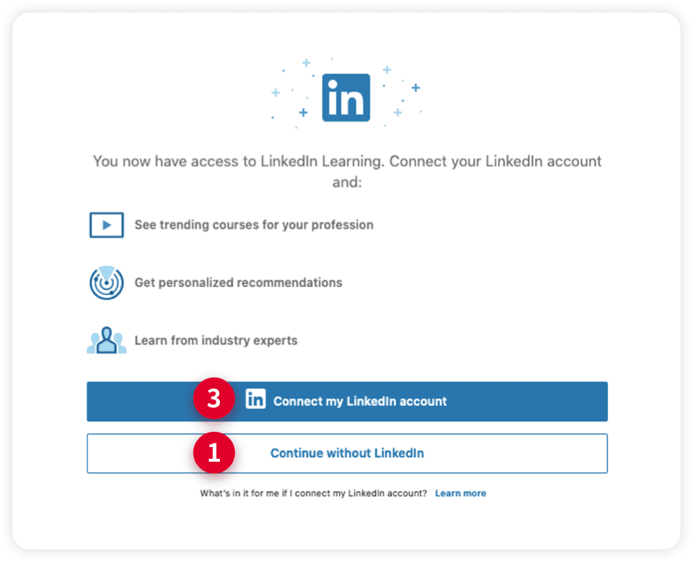
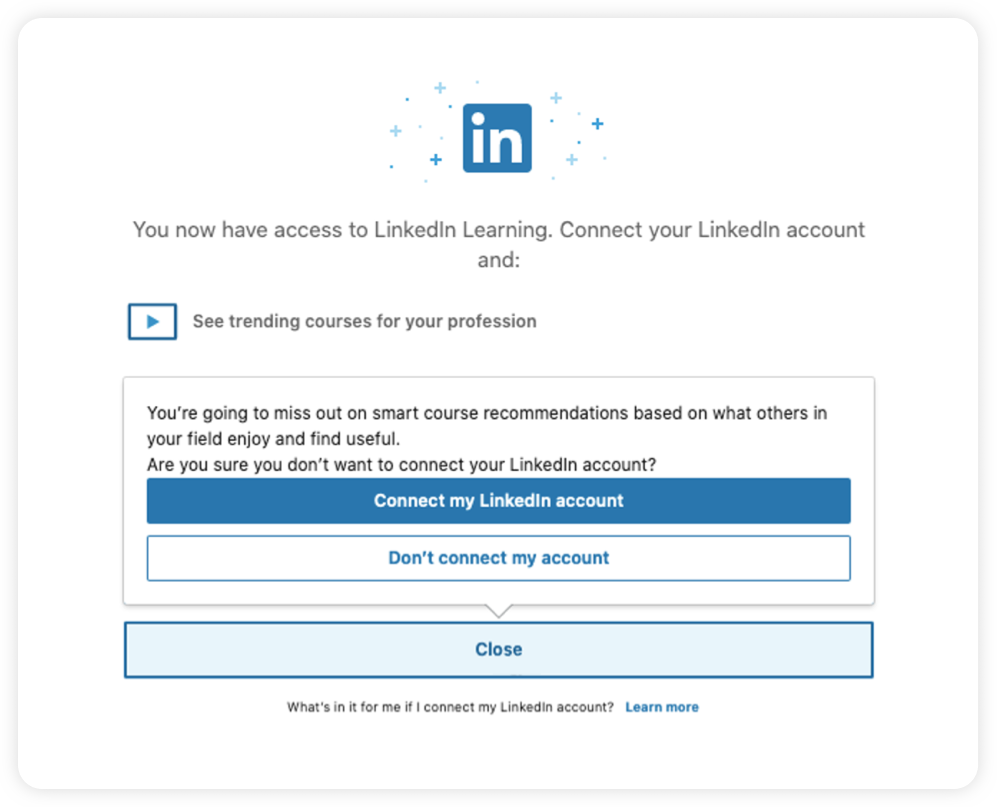

1. Linkedin 과정을 처음 학습하는 경우, 아래와 같이 기존에 개인이 보유하고 있는 ‘Linkedin 계정’과 연동하여 사용할것인지를 확인하는 화면이 보여집니다.
2. 기존에 개인이 보유하고 있는 ‘Linkedin 계정’과 ‘mySUNI계정’을 연결하지 않고 학습하고 싶은 경우
- 아래 표시된 ①, ②번을 순서대로 클릭하시면, ‘mySUNI계정’으로 학습이 가능합니다.
- 최초 연결 이후에는 학습할 때 마다 별도 로그인 할 필요가 없습니다.
3. 기존에 개인이 보유하고 있는 ‘Linkedin 계정’과 ‘mySUNI 계정’을 연결하여 학습하고 싶은 경우
- 아래 표시된 ③번을 클릭후 개인이 보유한 Linkedin 계정의 ID/PW를 입력하면 됩니다.
- LinkedIn 과정을 학습할 때 마다 개인 계정을 입력하면, 학습이력이 LinkedIn profile에 통합 관리됩니다.
개인 계정과의 연동을 확인하는 팝업
재확인하는 팝업
